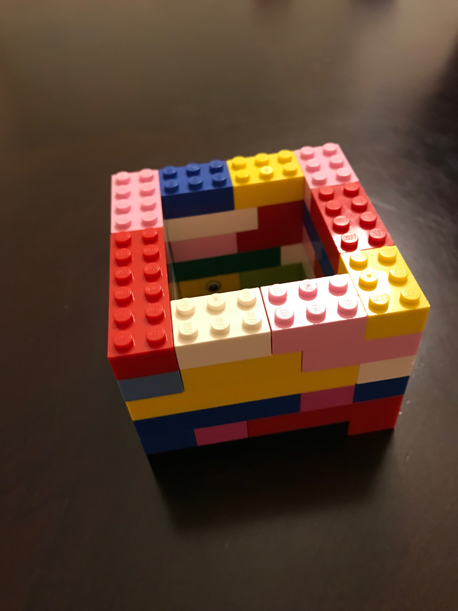

When you are cooking and you happen to have extra oil, what
do you do? Well from our knowledge, most women (or for that matter,
anyone that cooks) just pours the oil down any drain like the sink,
toilet, or even the bathtub. Well in case you didn't realize, that
is not good. It can cause basement flooding and i don't think anyone
wants that. That leads us to our problem. Where do you put your extra
oil? Definitely not those places!
Existing Solutions
What you could do is buy a fat trapper. You open a bag called
a fat trapper and pour the oil in. It stands so nobody needs to hold
it for you when you are pouring the oil in it. Pretty simple, right?
It is but the problem with those is that you need to buy a lot of them
which might be kind of expensive. Every time you will need to pour your
oil in a different bag. Another idea is to take an extra container that
you have and put it in and then freeze it and throw it out but what if
you don't have and extra container or you don't have space in your
freezer? The pizza stores already have a good idea. They put their oil
in a big barrel that gets picked up and goes soewhere to get disposed
of. We thought of an idea for home-baked extra oil because you usually
don't have that much extra oil. Here is our idea.
Our Solution/Invention
We decided to make something simple and not too expensive. We
thought that the extra oil can be poured into a plastic bag that has
foil in it.(You put the foil in it yourself.) Then, to make it easier
to pour the oil in, we made this holder to hold the bag so nobody has
to hold the bag for you while you are pouring it in. When you are done
pouring the oil in, you zip up the plastic bag and throw it out. If you
don't zip or close the bag, it will leak in your garbage bag and make
things very complecated so make sure to close your plastic bag. The foil
is there because if it is hot oil then the foil will make sure the plastic
bag won't melt. Here is a picture of our holder.

Then here are some pictures of the plastic bag in it and with the
foil and how it looks when you close the bag.
If you just want to build your own holder out of Lego like we did
it should be 10 Lego circles long, 10 Lego circles wide, and 6 Lego
bricks tall. Each Lego brick should be 2 Lego circles thick.